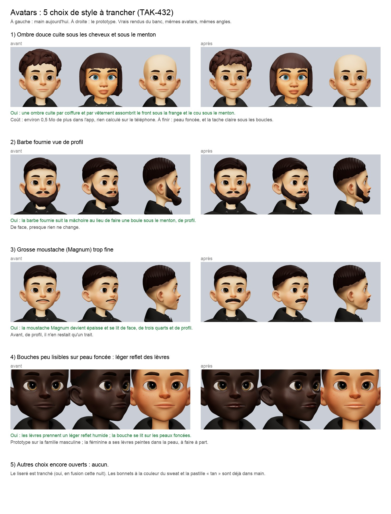

Avatars : 4 choix de style à trancher
Vrais rendus du banc, mêmes avatars et mêmes angles. À gauche, main aujourd'hui ; à droite, le prototype. Touche l'image pour l'agrandir.
Pour répondre : « 1 oui, 2 non… ». Ce que tu ne cites pas reste comme aujourd'hui.

1) Ombre douce sous les cheveux et le menton (environ 0,5 Mo de plus dans l'app). 2) Barbe fournie qui suit la mâchoire de profil. 3) Moustache Magnum plus épaisse. 4) Léger reflet des lèvres sur peau foncée. Le liseré, les bonnets et la pastille « tan » sont déjà tranchés.